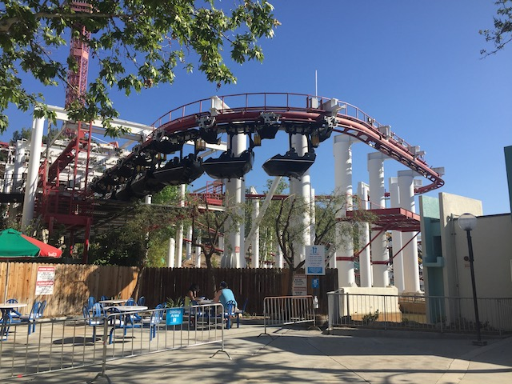
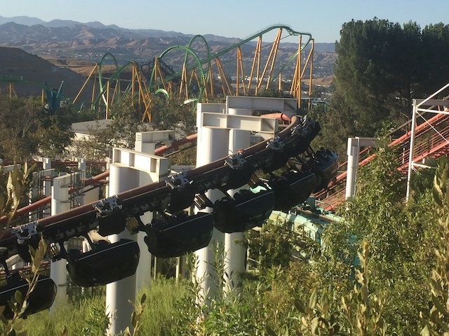
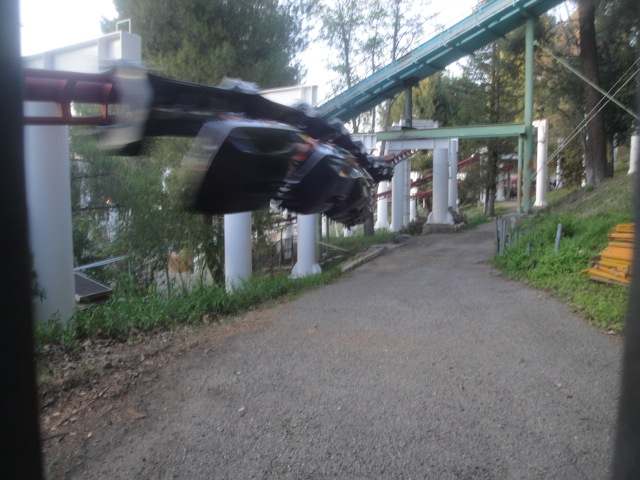
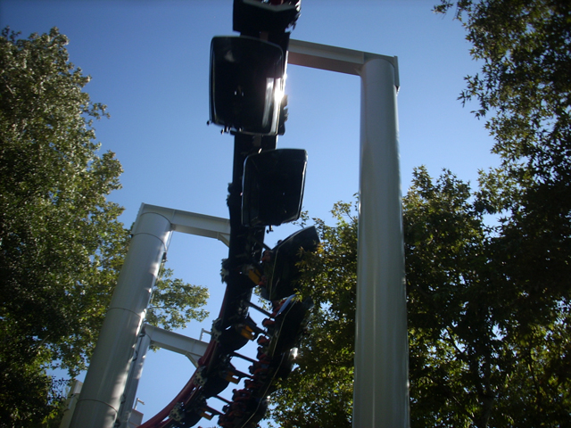
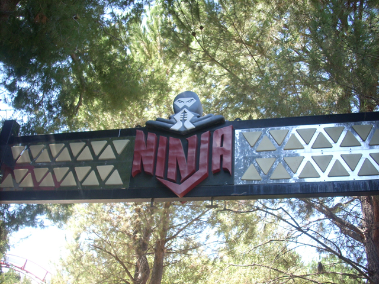
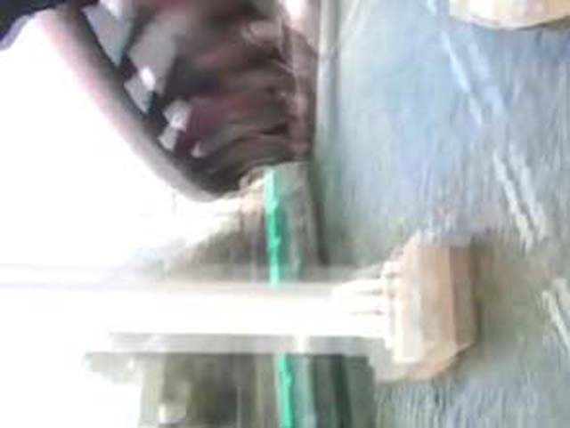
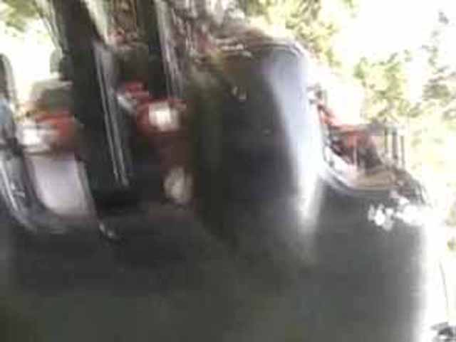

| |
Ninja Review

We're here at Six Flags Magic Mountain. Today's ride we'll be reviewing for you is Ninja. Ninja is a ride you can't see around the park since it's hidden in the trees. But if you're fat, there's a price to pay to ride Ninja. Ninja's station is on the top of Saumari Summit, which means you'll have to drag your whole body up that mountain (Or you can be a lazy ass and take Orient Express). After your hike, you get into the station and pull down the OTSRs, Then it's up the lifthill you go. Once you reach the top of the hill. Then you twist down and drop. While it's not quick acceleration, it's still fun. After that drop, You curve to the left. Your car then starts to swing and sway. Then you go through the trees as you just swing back and forth. Then you come swooping down towards Jet Streams water. And as you sway, you get the illusion that you're going to hit the supports. Back into the trees you go. You keep swaying and you fly out of the trees and soar back over Jet Stream. You then fly up and go back under Jet Stream. By this point, you arn't going fast anymore, you arn't swinging that much anymore and you're high above Jet Stream where we glide into the brake run. Now here's where Ninja says "F**k You!" After the brake run, you head up another lifthill. Then you think to yourself, "Oh Boy! More action is about to happen!" But when you get off the lifthill, you just glide right into the station. Dissapointment fills your soul despite that it was a fun ride. Overall, It's a fun suspended coaster. And if you think this ride is bad, you have to ride Iron Draggin at Cedar Point. I'd definitely reccomend riding this while you're at SFMM. Not only because it's a good suspended, but SFMM has to bribe you fattys with SOMETHING to get your lazy ass up the hill. Plus, it's really cool that you can still ride an Arrow Suspended Coaster since those are so rare.
7/10
Location: Six Flags Magic Mountain
Opened: 1988
Built by: Arrow
Last Ridden: November 28, 2022
Ninja Photos

















Home
|